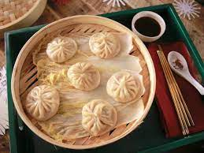
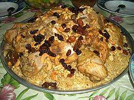
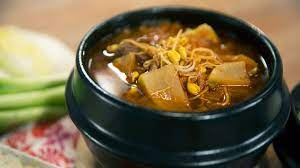
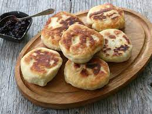
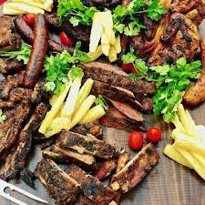

pasta receip


sichuan pork is A Chinese-inspired one-pan supper with crunchy greens and nuts, and a rich chilli and soy sauce
dumplings which generally consists of minced meat and finely chopped vegetables wrapped into a piece of dough skin. In China dumplings usually refers to boiled dumplings.
Mansaf is a dish of rice, lamb, and a dry yoghurt made into a sauce called jameed. It's not only one of the the most beloved Jordanian foods
Kabsa (Arabic: كبسة kabsah) is a mixed rice dish, served on a communal platter, that originates from Saudi Arabia but is commonly regarded as a national dish
kimichi It's basically spicy, fermented cabbage, kind of like sauerkraut, but with Korean flavors – garlic, ginger & Korean chilies. Kimchi is like the heart and soul of Korean cooking.
hangover It means "soup to chase a hangover" and is also called sulguk (Korean: 술국). It usually consists of dried Napa cabbage, vegetables and meat in a hearty beef broth.
a traditional Japanese dish of prepared vinegared rice (鮨飯, sushi-meshi), usually with some sugar and salt,

is a thick noodle made from wheat flour, used in Japanese cuisine. It is a comfort food for many Japanese people.

clam chowder is actually a very simple soup to prepare with a few pantry ingredients. Now some recipes call for fresh clams

also burger for short) is a sandwich consisting of one or more cooked patties of ground meat, usually beef, placed inside a sliced bread roll or bun
Poutine made with thick beef gravy on french-fried potatoes with fresh cheese curds is a style commonly found outside Quebec
is a variety of flat quick bread or any large, round article baked or cooked from grain. A bannock is usually cut into sections before serving.

Feijoada is a stew of beans with beef and pork. It is commonly prepared in Portugal, Brazil, Angola, Cape Verde, Guinea-Bissau, Mozambique

cheese bread" in Portuguese) or Brazilian cheese bread is a small, baked cheese roll or cheese bun, a popular snack and breakfast food in Brazil.
chimcherry is an Argentinean sauce or condiment, similar to pesto, that is popular throughout South America. This basic version uses fresh parsley, oregano, garlic
Asado is the technique and the social event of having or attending a barbecue in various South American countries, especially Argentina